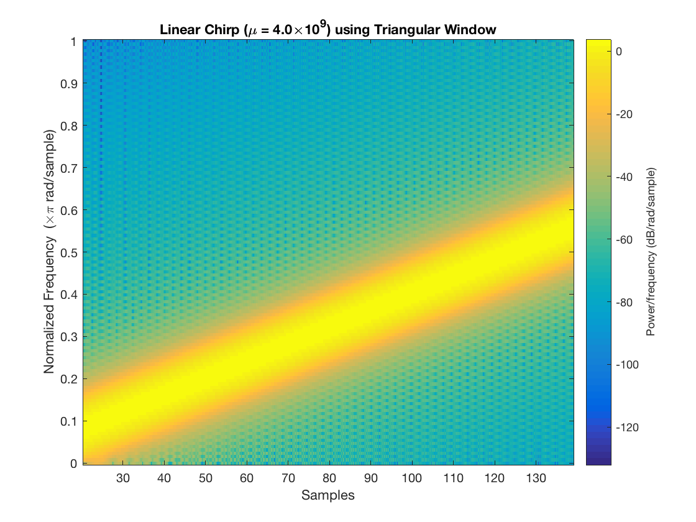
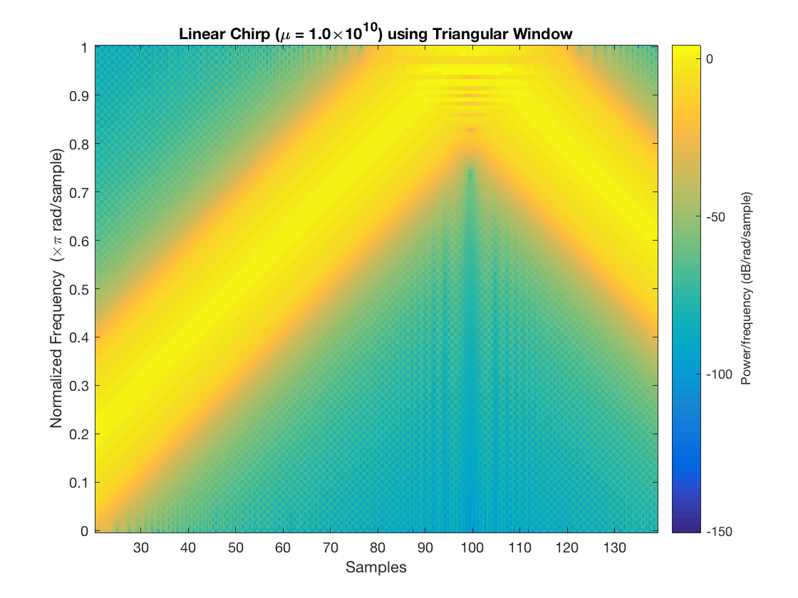
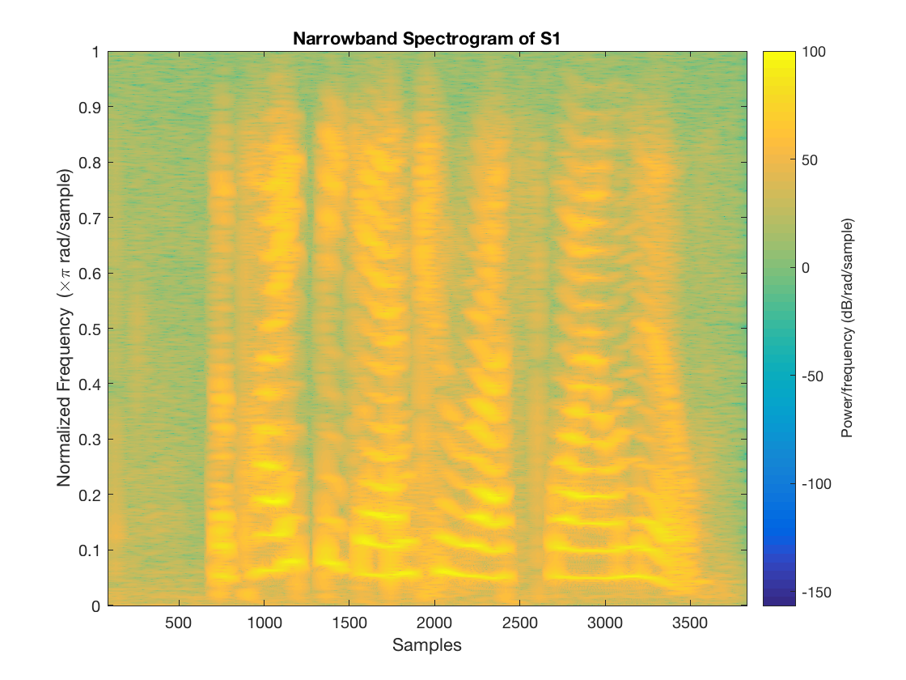
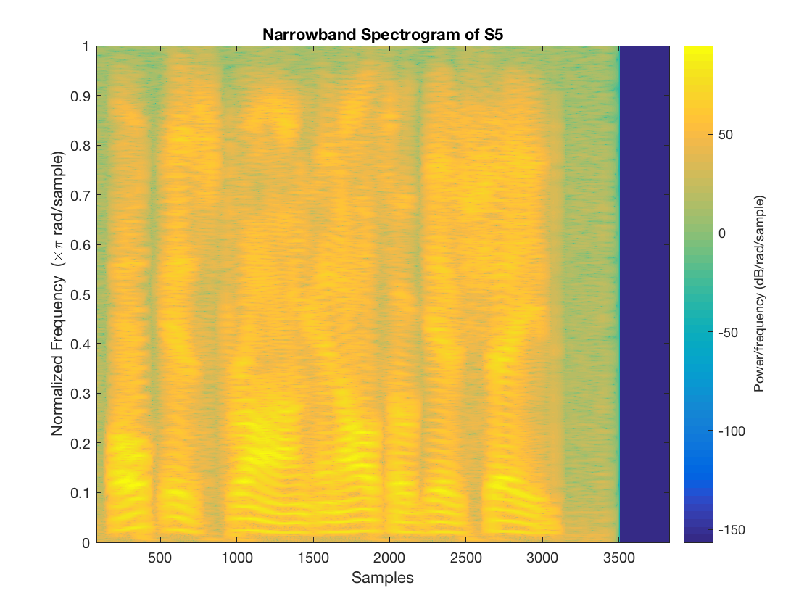
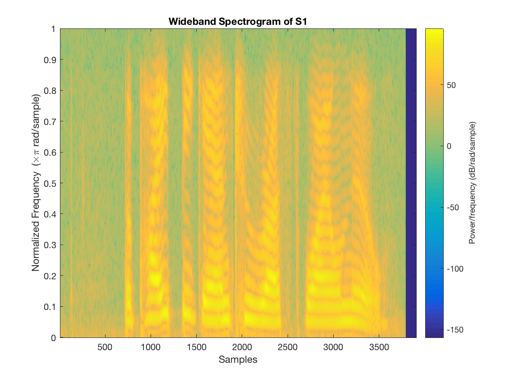
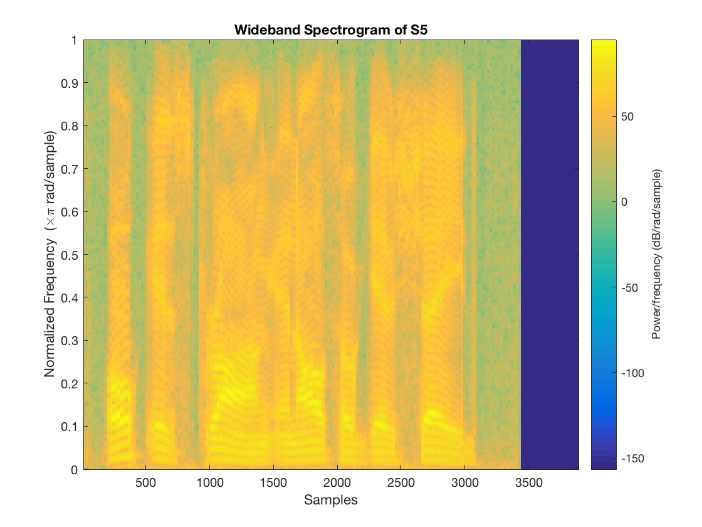
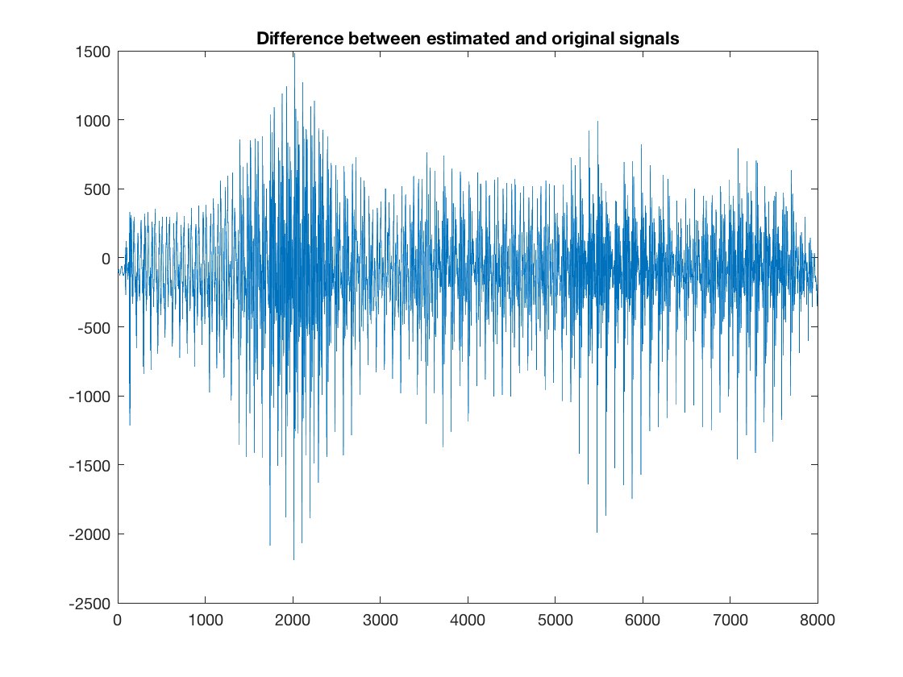
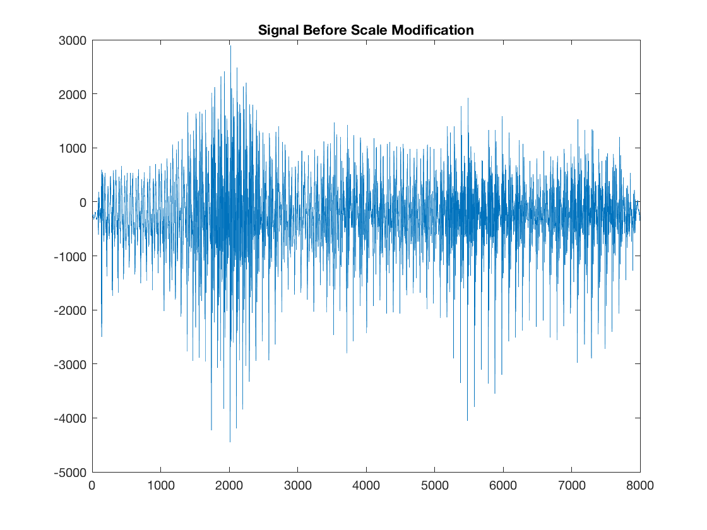
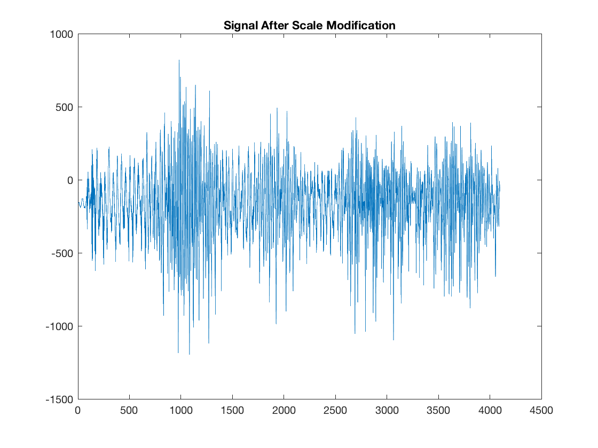

Contents
Section 1, 2, & 3
t = 0:1/5e6:0.0002;
x1 = cos(2*pi*(4*10.^9)*t.^2);
spectrogram(x1, triang(256), 255, 256, 'yaxis')
title('Linear Chirp (\mu = 4.0\times10^9) using Triangular Window')
x2 = cos(2*pi*(1*10.^10)*t.^2);
figure
spectrogram(x2, triang(256), 255, 256, 'yaxis')
title('Linear Chirp (\mu = 1.0\times10^1^0) using Triangular Window')
 
Section 4
load s1
figure
spectrogram(s1, triang(1024), 1023, 2048, 'yaxis')
title('Narrowband Spectrogram of S1')
load s5
figure
spectrogram(s5, triang(1024), 1023, 2048, 'yaxis')
title('Narrowband Spectrogram of S5')
 
Section 5
load s1
figure
spectrogram(s1, triang(128), 64, 2048, 'yaxis')
title('Wideband Spectrogram of S1')
load s5
figure
spectrogram(s5, triang(256), 127, 2048, 'yaxis')
title('Wideband Spectrogram of S5')
 
Section 6
load vowels
leSTFT = spectrogram(vowels, rectwin(256), 128, 1024);
leEstimatedSignal = estimatedSignal(leSTFT);
lePaddedEstimatedSignal = zeros(8000, 1);
lePaddedEstimatedSignal(1:7936) = leEstimatedSignal;
leDifference = vowels-lePaddedEstimatedSignal;
figure
plot(1:1:8000, leDifference)
title('Difference between estimated and original signals')
newSpectrogram = leSTFT(:,1:2:end);
fasterAudio = estimatedSignal(newSpectrogram);
figure
plot(leTimeAxis, vowels)
title('Signal Before Scale Modification')
figure
plot(1:1:4096, fasterAudio)
title('Signal After Scale Modification')
  